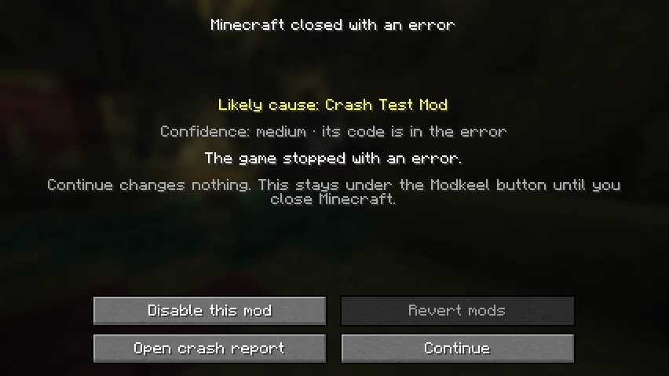
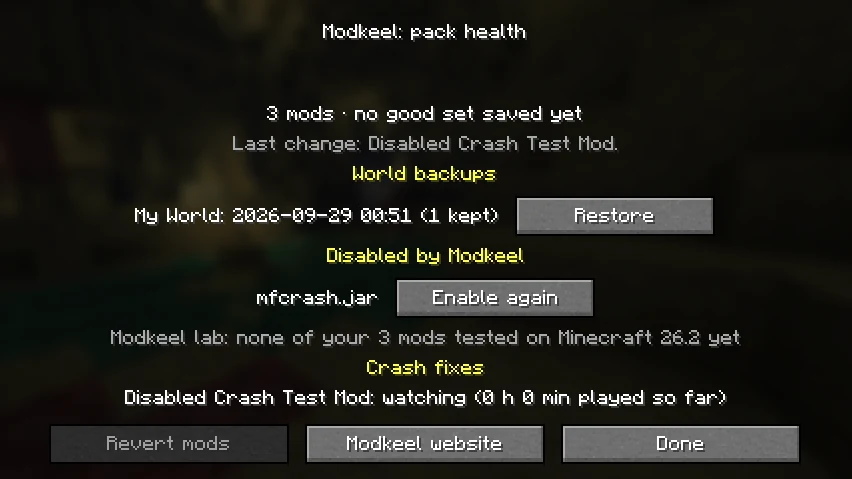

The next start names the likely cause, how sure Modkeel is and why.
Modkeel Companion
A safety net you drop in the mods folder.
No setup, no config. Everything lives under the Modkeel button on the title screen.
- 01Worlds survive mod changesBefore a world loads with a different set of mods, Modkeel saves a copy. Restoring never deletes anything.
- 02The crash, in plain wordsOn the next start: the mod that most likely caused it, how sure Modkeel is, and why.
- 03One-click fixes you can undoDisable that mod or go back to the last set of mods that worked. Modkeel then checks the fix held.
- 04Cannot be what breaks your packNo mixins: it does not patch the game. Nothing is sent unless you choose to share (privacy).
For pack authors
Fewer my game crashed, help
messages in your Discord.
Your players see which mod broke and fix it themselves. MIT licensed: put it in any pack, public or private, without asking.
- 0mixins
- 0config files to ship
- ~130 KBper jar
- 7languages
What's next
Mods for the versions their authors skipped.
The Modkeel CLI finds community ports of a mod on GitHub, compiles them and checks they load. Open source today; a desktop app and tested modpacks come next.
$ modkeel get "Create" -m 1.21.10 -l neoforge Modrinth: no build for 1.21.10 GitHub: 3 community ports, 1 targets 1.21.10 compiling ... ok create-1.21.10.jar loads in a real server